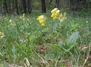
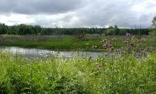
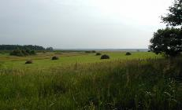
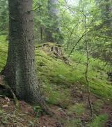

Государственный природный заказник «Виштынецкий»
С 1994 года на территории Красного леса организован комплексный государственный природный заказник «Виштынецкий» регионального значения (распоряжение администрации Калининградской области № 281-р от 5 мая 1994 года). С 1998 года он функционировал как зоологический государственный природный заказник регионального значения (постановление главы администрации области от 18 мая 1998 года № 351 «Об утверждении Положения о государственных природных заказниках»).
Заказник был образован с целью сохранения популяции благородного оленя и предусматривал особый режим охраны, обеспечивающий использование природных ресурсов без ущерба для охраняемого вида.

Редкие виды растений и животных
В исходном тексте отмечено, что на территории заказника встречается около сотни редких и охраняемых растений Калининградской области, в том числе лилия саранка (Lilium martagon), аконит пёстрый (Aconitum variegatum), гроздовник полулунный (Botrychium lunaria), синюха голубая (Polemonium caeruleum), пальчатокоренник Фукса (Dactylorhiza fuchsii) и наперстянка крупноцветковая (Digitalis grandiflora).
Старый текст сайта также указывает, что леса Виштынецкой возвышенности оставались единственным местом обитания рыси в Калининградской области. Это утверждение требует отдельной проверки по современным данным.


